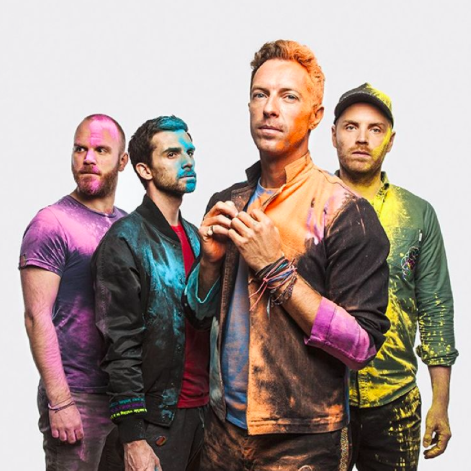
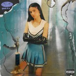

ColdPlay
British Band
851 Followers
Coldplay are a British rock band formed in London in 1996. Chris Martin (Vocals), Jonny Buckland (lead guitarist), Guy Berryman (lead bassist), and Will Champion (drums) met at University College London and began playing music together from 1996 to 1998, first calling themselves Pectoralz and then Starfish before finally changing their name to Coldplay.
247 Tracks | 128 Albums

Good for you
Olivia Rodrigo
4:44
Blinding Lights
The Weeknd
4:44
Peaches
Justin Bieber
4:44